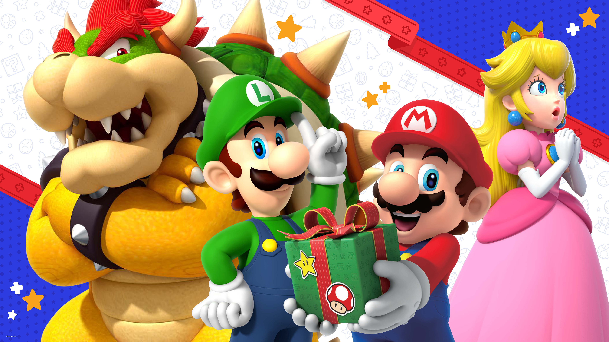
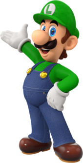
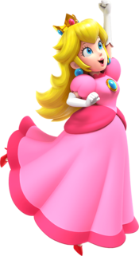
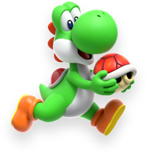
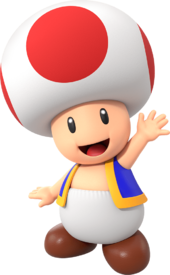
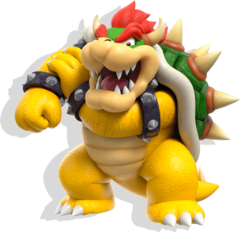

Here are some of Mario's most notable friends and thier basic characteristics:

Mario's younger brother.He's taller and thiner than Mario, often depicted as more cautious and timid but very brave when it counts. He wears a green hat and overalls.

The ruler of the Mushroom Kingdom. Known for her kindness, grace, and leadership. Often the damsel in distress but also takes an active role in various adventures. She wears a pink dress and crown.

A friendly dinasour who helps Mario by giving him rides and using his long tongue to eat enemies and obstacles. Known for his loyalty and cheerful demeanor. Yoshi comes in various colores, but green is the most iconic.

A loyal attendant to Princess Peach and a resident of the Mushroom kingdom. Known for his mushroom-shaped head and blue vest. He's helpful, brave, and always eager to assist Mario on his quests.

He is a large, powerful, abd fearsome creatures resembling a dragon-turtle hybrid. Known forn his imposing size, spiked shell, and fiery breath, Bowser's main goal is often to kidnap Princess Peach and conquer the Mushroom kingdom.